Analiza rješenja · JOI Spring Camp 2025 · Dan 4
Plan preseljenja
O ovom članku
Tekst je prijevod službene japanske prezentacije rješenja, preoblikovan u članak. Slajdovi su ugrađeni kao slike; natpis pod svakim slajdom je prijevod teksta na njemu. Dijelovi označeni kao trenerska napomena nisu u izvornoj prezentaciji — dodani su da popune korake koje slajdovi preskaču ili samo skiciraju.
Slajdovi
Zadatak
izvorni slajdovi 1–4
-
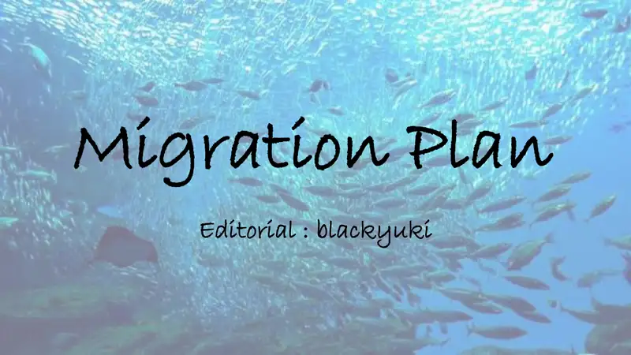
1Naslov; analiza: blackyuki. -
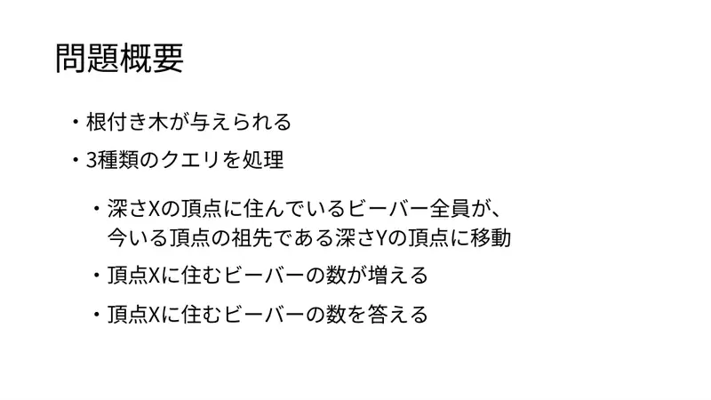
2Korijenjeno stablo; tri upita: svi dabrovi dubine $X$ sele pretku dubine $Y$; dodaj dabrove u vrh; ispiši broj u vrhu. -

3Slika. -
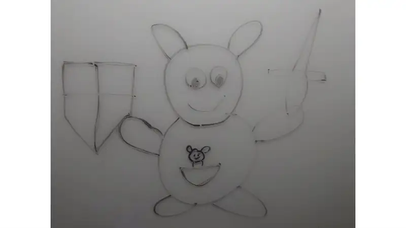
4Slika.
← → tipke ili klik na sliku
Podzadaci 1–3 25 bodova
Koraci algoritma
Simulacija i zakopavanje
izvorni slajdovi 5–11
-
5Podzadatak 2: $N\le20$. -
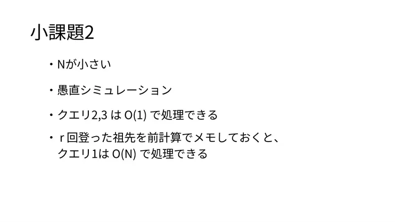
6Simulacija; tip 2, 3 u $O(1)$; predak $r$ razina više predizračunan → tip 1 u $O(N)$. -
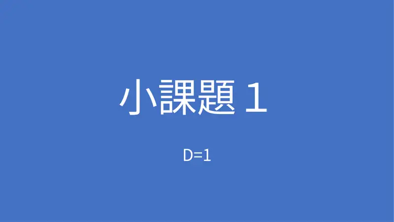
7Podzadatak 1: $D=1$. -
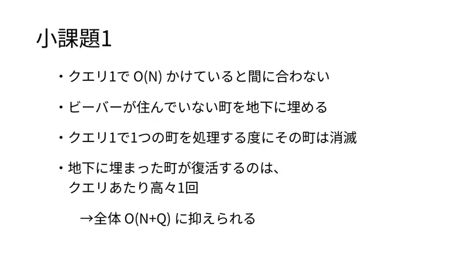
8$O(N)$ po tipu 1 je previše; zakopaj gradove bez dabrova; grad oživi najviše jednom po upitu; svaki obrađen grad nestaje: $O(N+Q)$. -
9Podzadatak 3: $D\le20$. -
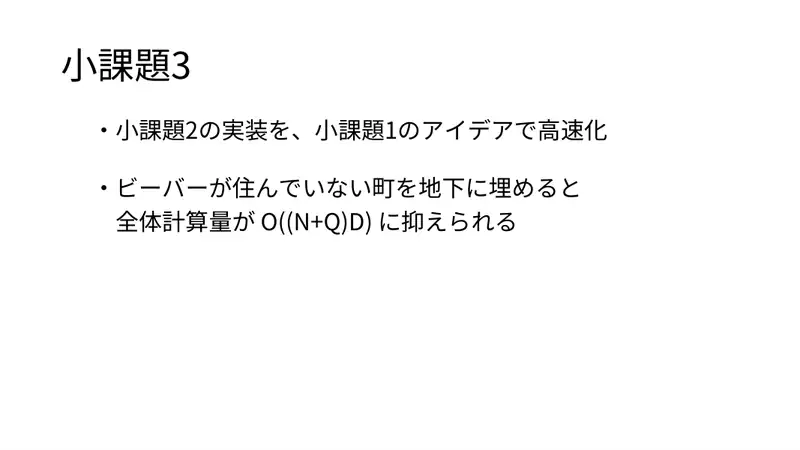
10Simulacija + zakopavanje: $O((N+Q)D)$. -
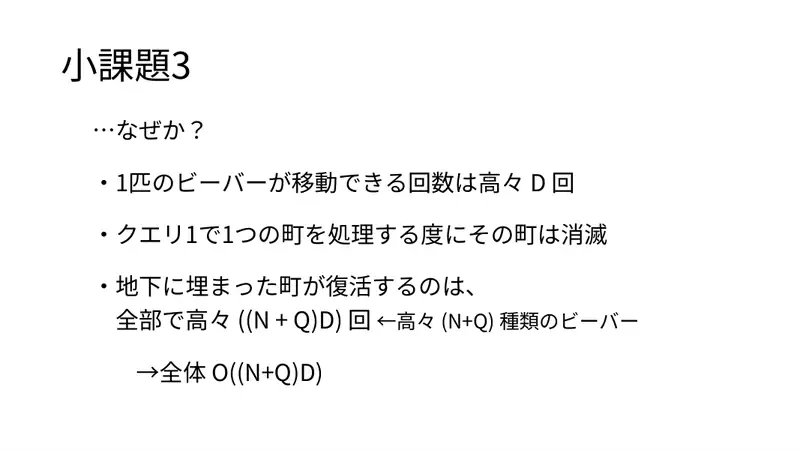
11Zašto: jedan dabar seli $\le D$ puta; oživljavanja $\le(N+Q)D$ jer je vrsta dabrova $\le N+Q$.
← → tipke ili klik na sliku
Podzadaci 4–5 30 bodova
Koraci algoritma
Apstraktni vrhovi po dubini
izvorni slajdovi 12–17
-
12Podzadatak 4: bez dodavanja, $\le5$ upita. -
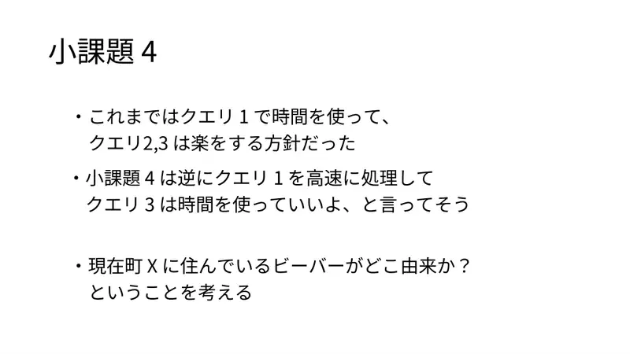
13Dosad je tip 1 bio skup, a 2, 3 jeftini; sad obrnuto. Odakle su dabrovi koji su sada u $X$? -
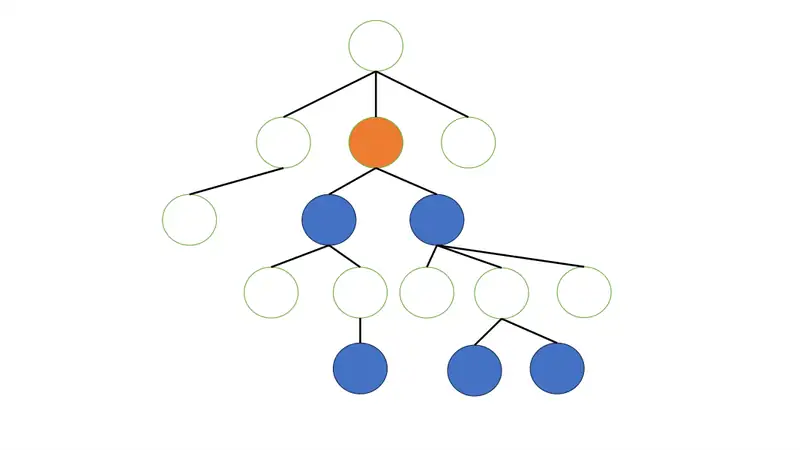
14Slika. -
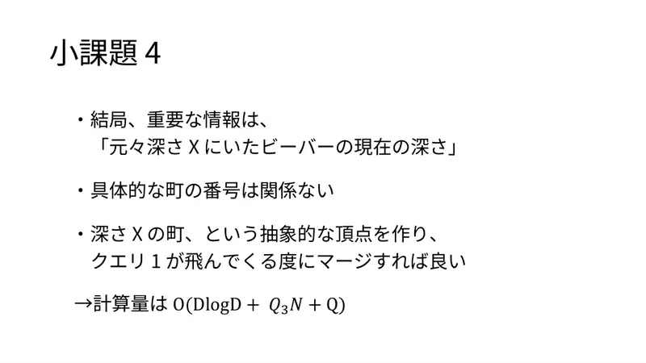
15Bitno: „trenutna dubina dabrova koji su izvorno bili na dubini $X$”; brojevi gradova nebitni; apstraktni vrh po dubini, tip 1 = spajanje. $O(D\log D+Q_3N+Q)$. -
16Podzadatak 5. -
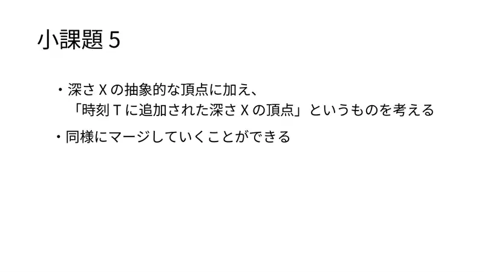
17Dodaj apstraktne vrhove „dodano u trenutku $T$ na dubini $X$”; spajaj jednako.
← → tipke ili klik na sliku
Podzadatak 6 27 bodova
Koraci algoritma
Pravokutni zbroj
izvorni slajdovi 18–22
-
18Bez dodavanja. -
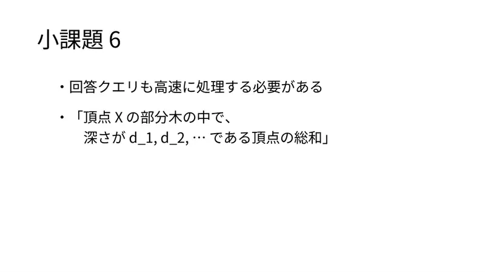
19Upit 3 mora biti brz: „zbroj u podstablu $X$ po vrhovima dubine $d_1,d_2,\dots$”. -
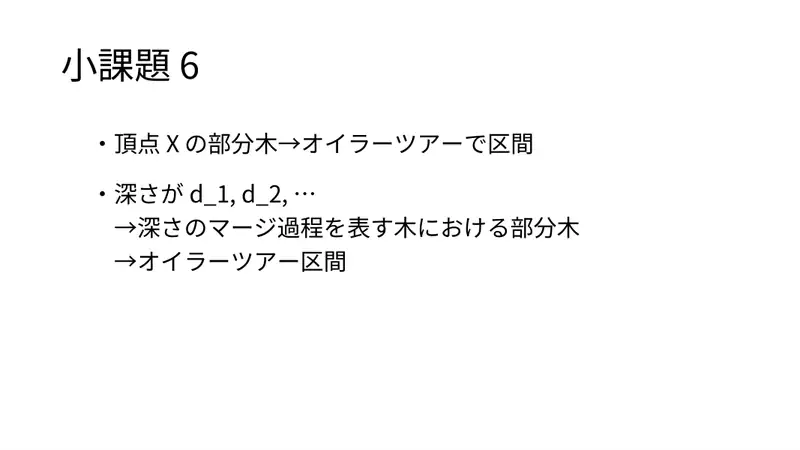
20Podstablo → Eulerov interval; skup dubina → podstablo stabla spajanja → njegov Eulerov interval. -
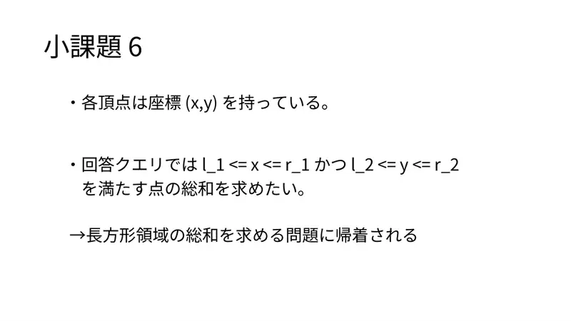
21Vrh ima točku $(x,y)$; upit = zbroj po pravokutniku. -
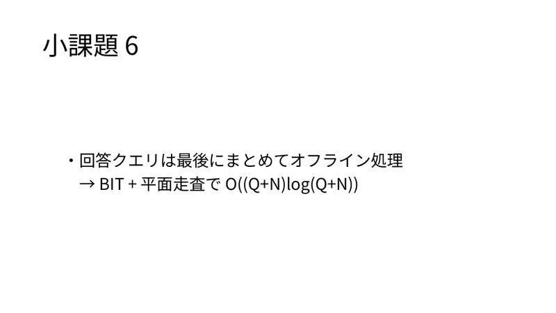
22Offline, pomet + BIT: $O((Q+N)\log(Q+N))$.
← → tipke ili klik na sliku
Puno rješenje 18 bodova
Koraci algoritma
Spoj ili elegantna alternativa
izvorni slajdovi 23–29
-
23Bez ograničenja. -
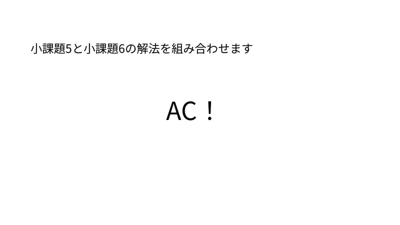
24Spoji 5 i 6 — AC! -
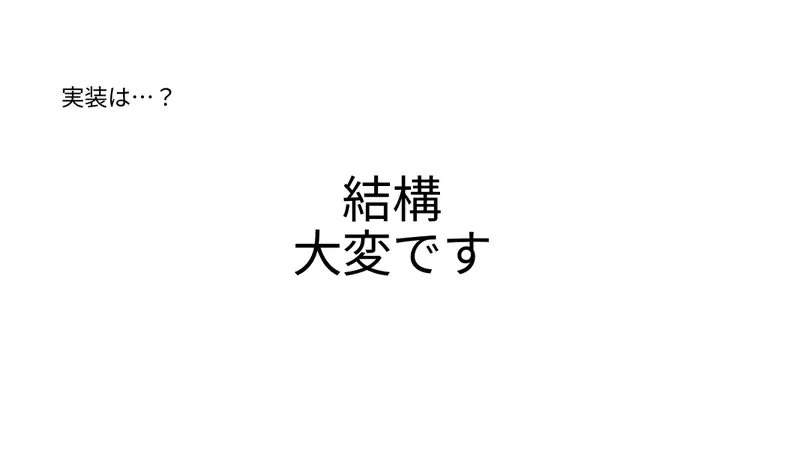
25Implementacija? Prilično naporna. -
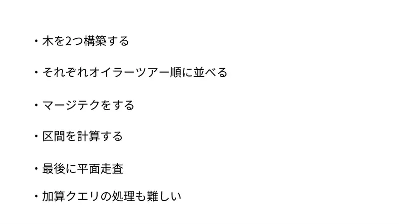
26Dva stabla, dva Eulerova obilaska, spajanje, intervali, pomet; i dodavanja su teška. -
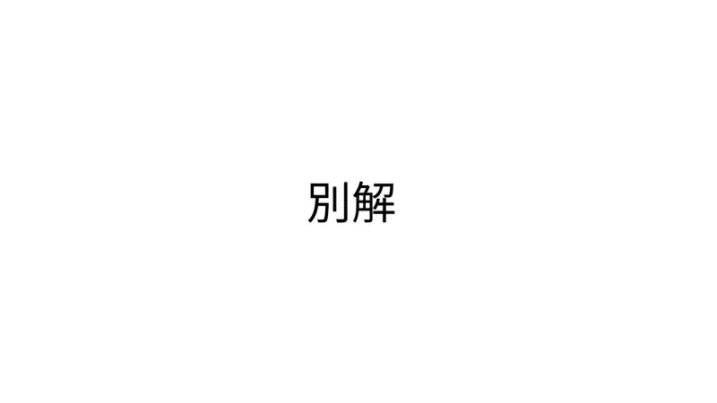
27Alternativa. -
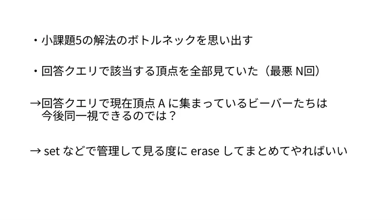
28Usko mjesto podzadatka 5: upit gleda sve odgovarajuće grupe. Ali dabrovi koji su sad zajedno u $A$ ubuduće su jedno — drži ih u set-u i pri pregledu briši i spoji. -
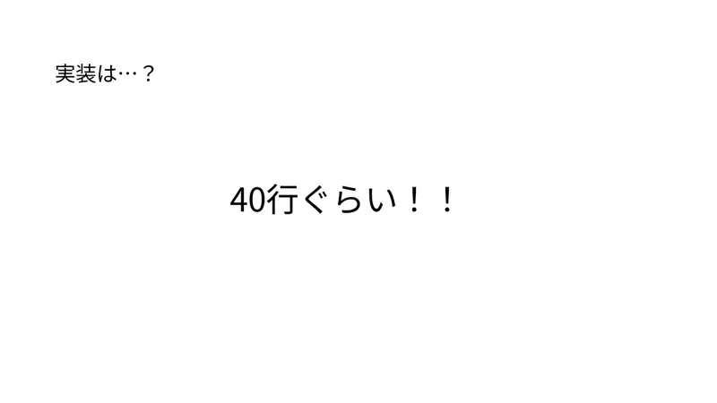
29Implementacija: ~40 redaka!
← → tipke ili klik na sliku
Slajdovi
Statistika
izvorni slajdovi 30–32
-
30Raspodjela bodova. -
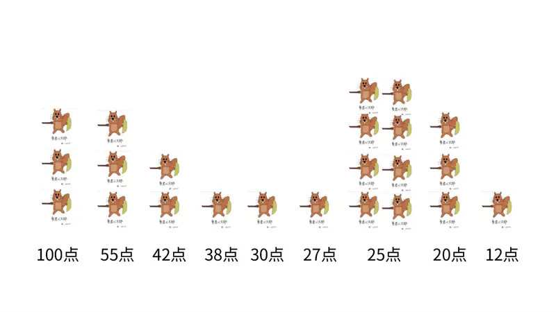
31Bodovi: 100, 55, 38, 27, 12, 42, 30, 25, 20. -
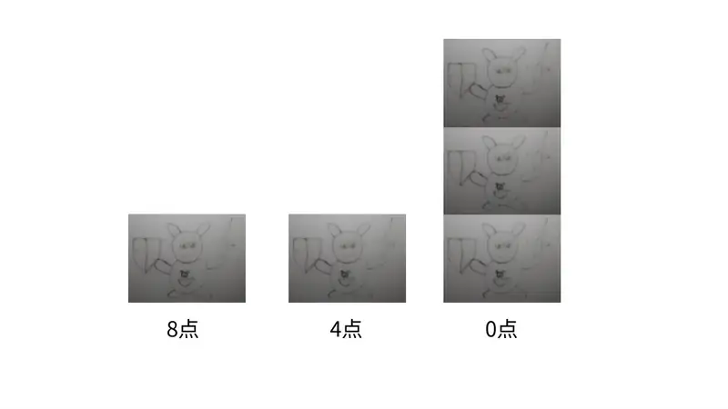
328, 4, 0.
← → tipke ili klik na sliku
Sažetak
- Grupe po podrijetlu se nikad ne razdvajaju; stanje = klase po trenutnoj dubini.
- Tip 1 = spajanje skupova; tip 3 = Eulerov interval u klasi, pa spajanje pregledanih u jednu grupu (amortizirano).
- Alternativa: stablo spajanja + pravokutni zbroj offline.